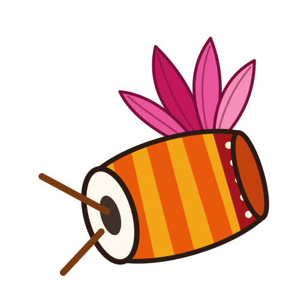

Dhaak
Bengaluru Pujo Live · শারদীয়া ২০২৬
Loading…
Demo mode.
Crowd pulse is
simulated
from the crowd model, since no backend is connected yet
. Pandal list is real
(research snapshot, 14 Oct 2026)
. Use the time menu to preview puja nights.
×
Map: Voyager
Heat
Names
◎
Empty
Easy
Busy
Packed
Jam
Pin unverified
◉
Live
☰
Explore
I'm here
⇢
Plan
0
＋
Add
×
Finding the pujo you're at…
Queue to see the pratima
(optional)
None
5 min
15 min
30 min
1 hr+
How crowded is it?
Tap to send
＋ Photo